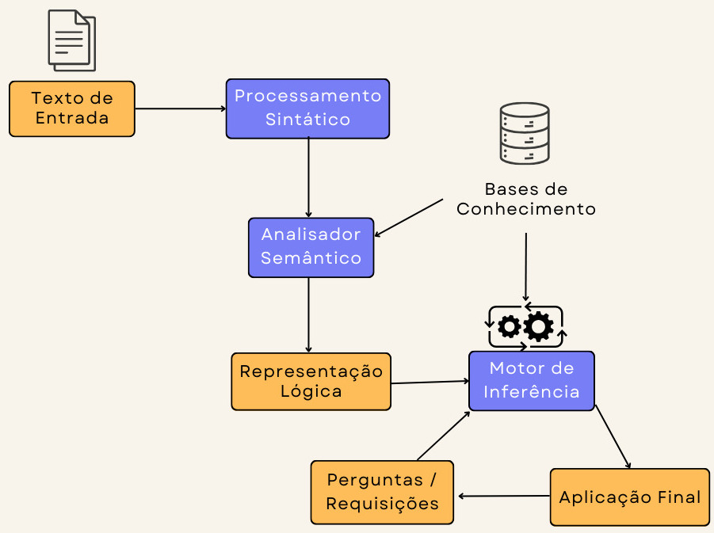
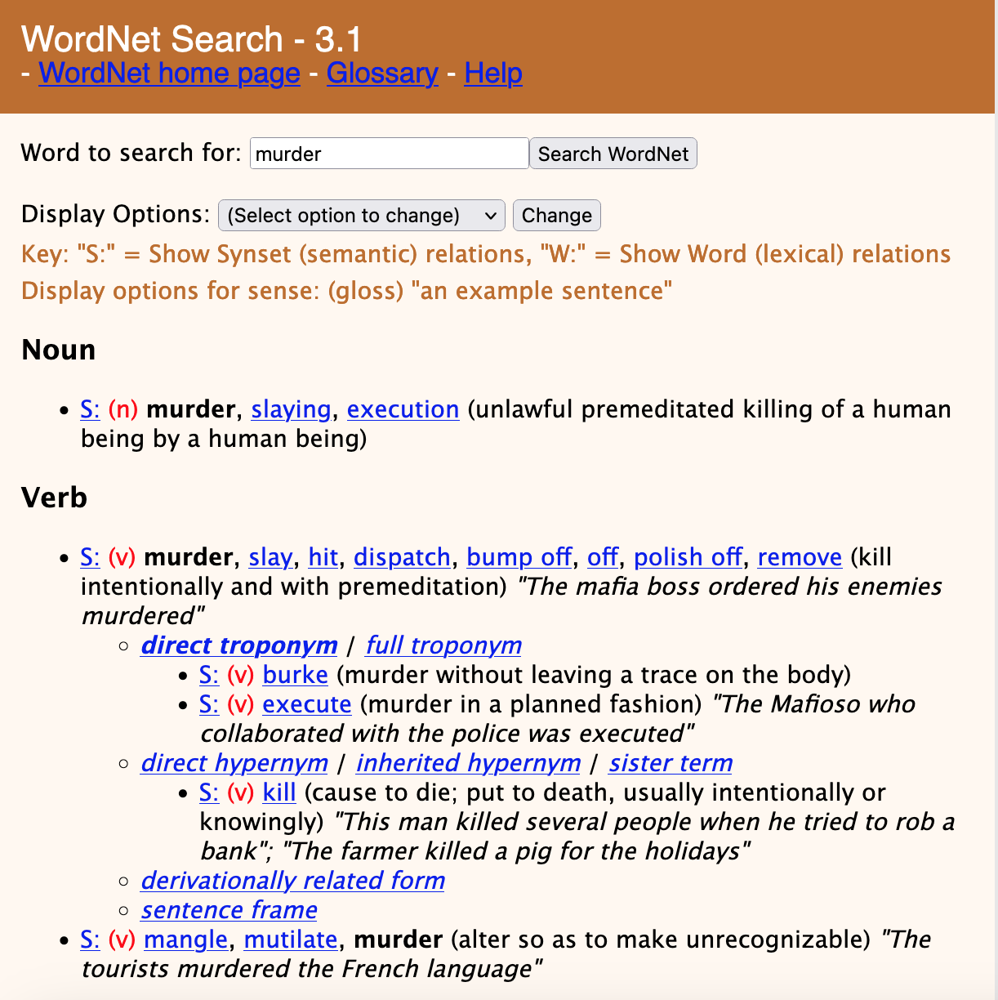
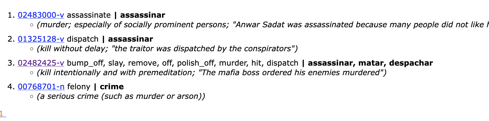
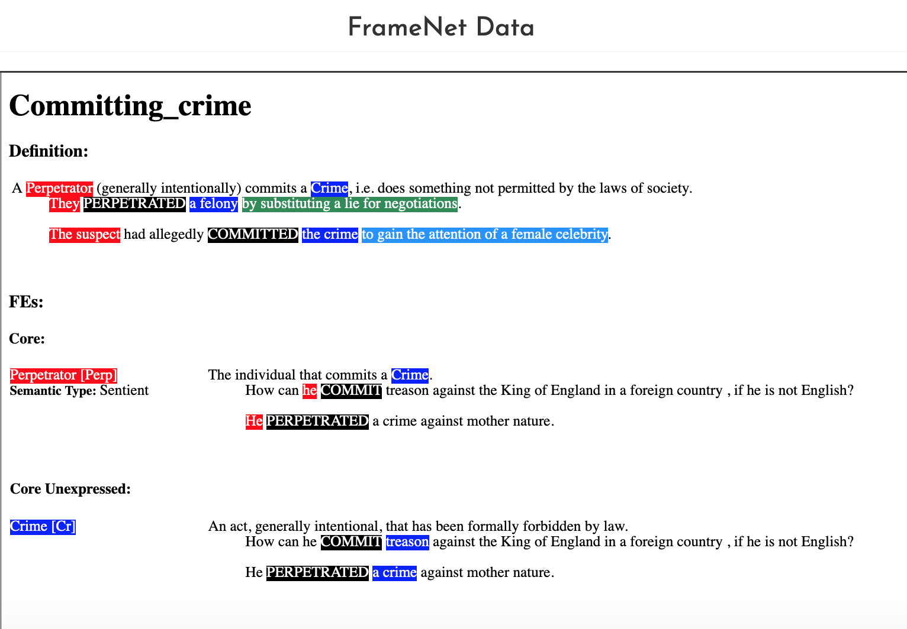
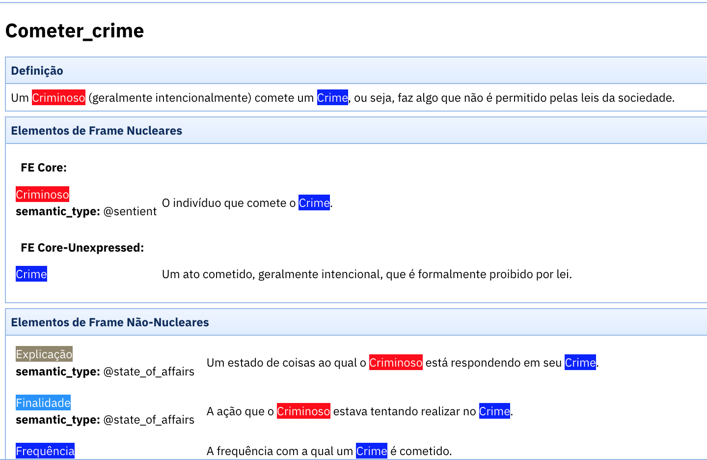
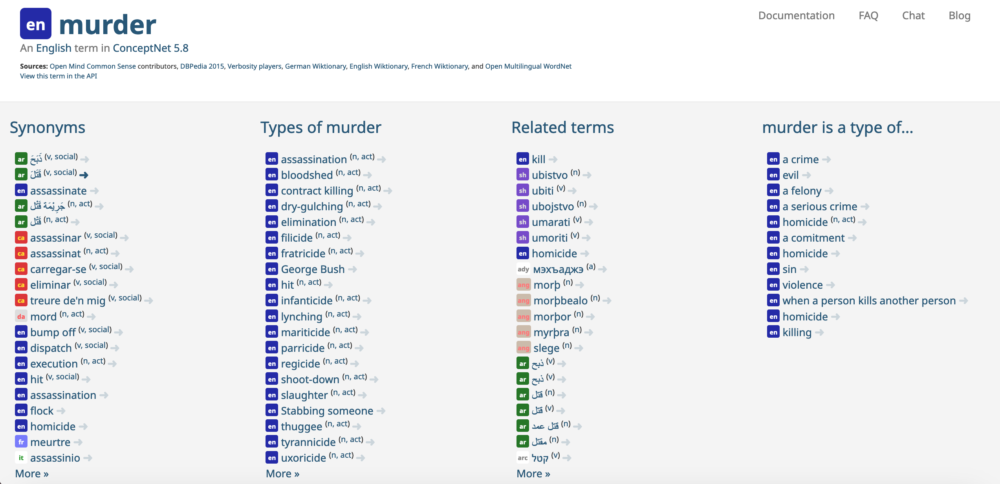
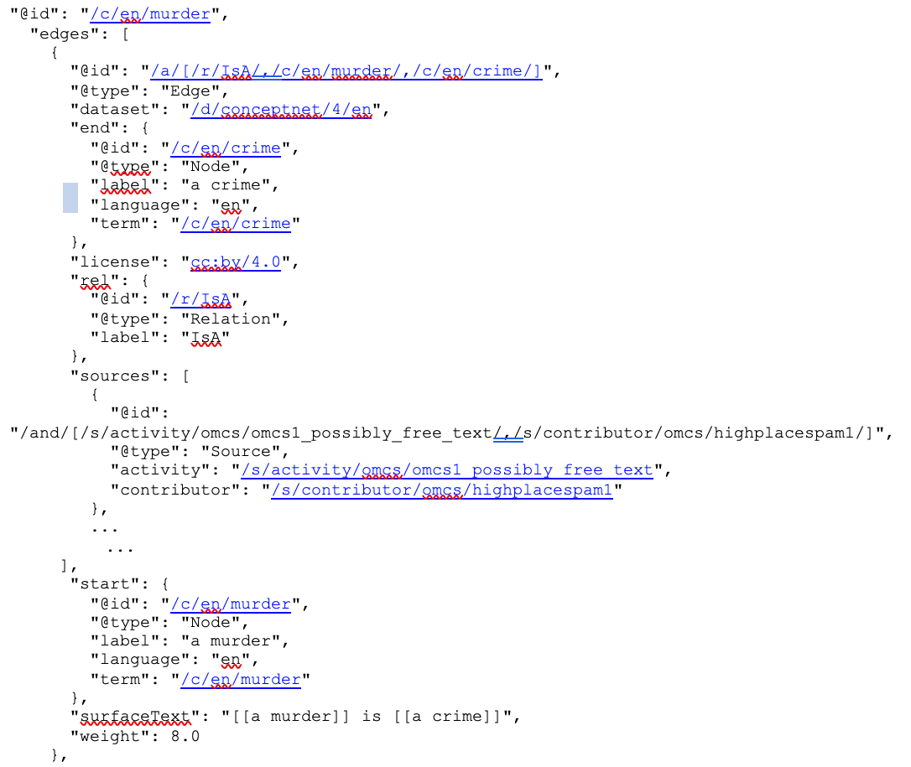
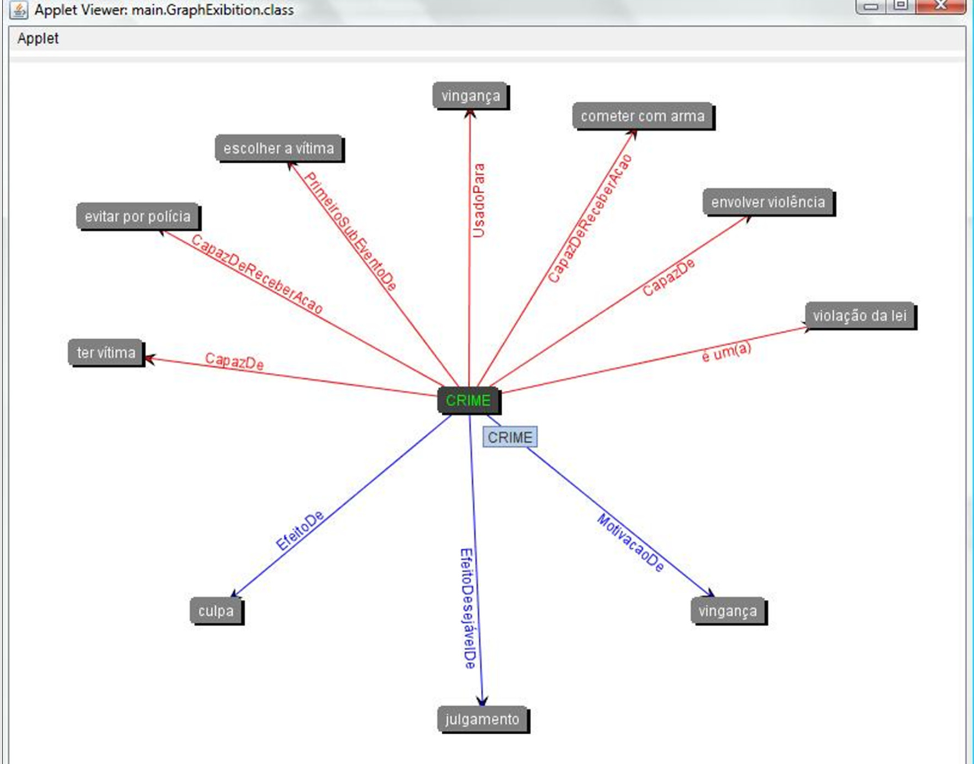

9 Semântica com técnicas simbólicas
Métodos simbólicos em Processamento de Linguagem Natural (PLN) envolvem a utilização de regras e representações formais explícitas para processar e entender textos em linguagem natural. Esses métodos especializam-se na manipulação de símbolos e dados estruturados, como gramáticas, ontologias e bases de conhecimento. Especificamente para o entendimento de textos em linguagem natural usando técnicas simbólicas, existem analisadores semânticos (ou parsers semânticos) e bases de conhecimento semântico, que visam fornecer uma representação semântica dos textos. A partir desta representação, motores de inferência são capazes de realizar raciocínio para que aplicações possam, por exemplo, extrair informações, sumarizar textos, e responder perguntas com base nos textos.
A Figura 9.1 apresenta uma arquitetura tradicional para sistemas de entendimento de textos em linguagem natural (Natural Language Understanding – NLU). A partir do texto de entrada, uma camada de processamento sintático realiza uma série de análises no texto, tais como detecção de língua, separação de sentenças, tokenização, análise morfológica e sintática (Capítulo Sequência de caracteres e palavras). Na fronteira entre o processamento sintático e a análise semântica, outros processamentos linguísticos são necessários, como reconhecimento de entidades nomeadas, identificação de expressões multipalavras etc. Em seguida, o texto analisado (sintaticamente) é enviado ao analisador semântico (parser) que gera uma representação lógica do texto. A representação lógica e a(s) base(s) de conhecimento, no que lhes concerne, são entradas para o motor de inferência. Nesse processo, termos do texto de entrada são associados aos elementos da base de conhecimento e o motor de inferência gera respostas a perguntas (queries) para uma aplicação final.
É pertinente fazer uma observação neste ponto para uma definição de base de conhecimento. Uma “base de conhecimento” refere-se a um repositório centralizado, processável por máquina, que contém informações, dados, regras e procedimentos que são usados para capturar, representar e armazenar conhecimento geral ou de um domínio específico. Tais bases de conhecimento são fontes de conhecimento de mundo e suportam diversas tarefas e aplicações em PLN. Uma base de conhecimento pode ser estruturada de diversas maneiras, incluindo bancos de dados relacionais, linguagem para ontologias (e.g. a OWL1), formalismos para troca de dados entre sistemas (e.g. o formato JSON2), redes semânticas ou sistemas baseados em regras, dependendo da sua finalidade e da natureza do conhecimento armazenado.

Fonte: Adaptada de (Ovchinnikova, 2012, p. 9)
Tradicionalmente, sistemas lógicos são usados para representação formal dos textos e seus motores de inferência servem para gerar conclusões a partir dos textos. Podemos citar os sistemas lógicos mais usados em PLN: variações de Lógica Descritiva (Description Logic – DL) (Baader et al., 2003), da Lógica de Primeira Ordem (Blackburn; Bos, 2005; Eijck; Unger, 2010), vários tipos de Programação em Lógica (PROLOG) (Dahl, 1994) e Lógicas Intensionais (Shapiro, 2000).
Uma característica importante dos sistemas lógicos usados para a semântica de linguagem natural é que eles dependem fortemente da forma lógica do texto ou argumento. No entanto, muitas conclusões e respostas fornecidas ao se ler um texto são justificadas pela contribuição semântica dos conceitos relacionados, não definida a priori, mas somente enquanto usados em um contexto particular. Por exemplo, considere a inferência que conclui que “Alguém foi assassinado” a partir da premissa que “Alguém foi executado”. A contribuição semântica do conceito “executar” (no sentido de “assassinar”) é que torna esta inferência plausível, e não a forma da sentença. Da mesma forma, a inferência “um relâmpago é visto agora” para “um trovão será ouvido em breve” é autorizada pelo conteúdo dos termos “trovão” e “relâmpago”. Para se realizar inferências desta natureza, alguns filósofos como Sellars (Sellars, 1953) e Brandom (Brandom, 2001) propõem abordagens para expressão do significado que suportam análises semânticas não somente sobre a forma das sentenças, mas são capazes de, com base no domínio dos conteúdos dos termos articulados nas sentenças e textos, descobrir como estes [os conteúdos dos termos] contribuem conjuntamente para o significado das sentenças e para realização de inferências.
Este capítulo tem como objetivo examinar, além dos frameworks semânticos, tais como AMR (Abstract Meaning Representation) (Banarescu et al., 2013) e DELPH-IN (Copestake et al., 2005), os tipos de bases de conhecimento mais utilizados em PLN. Nesta versão inicial do capítulo, são apresentadas as bases (também chamadas de recursos léxico-semânticos) WordNet de Princeton (Fellbaum, 1998) e FrameNet (Baker et al., 1998), e suas versões em português: OpenWordNet-PT (De Paiva et al., 2012) e FrameNet Brasil (FN-BR) (Torrent; Ellsworth, 2013); bem como bases de conhecimento voltadas ao senso comum, tais como a ConceptNet (Speer et al., 2016) e iniciativas para o português (OMCS-BR (Anacleto et al., 2006) e a InferenceNet-BR (Pinheiro et al., 2010)). Existem outros tipos de bases de conhecimento na área do PLN, tais como dicionários e ontologias diversas, por exemplo, WikiData (Vrandečić; Krötzsch, 2014), YAGO (Suchanek et al., 2007) ou BabelNet (Navigli; Ponzetto, 2012). No entanto, nossa descrição aqui visa apenas a uma primeira exposição dos distintos paradigmas de expressão de conhecimento semântico. Tendo em vista cada base de conhecimento descrita, analisamos um exemplo de texto motivador. Por fim, apresentamos as considerações finais deste capítulo.
9.1 Bases de Conhecimento Semântico
Na área da Inteligência Artificial (IA), o interesse por bases de conhecimento computáveis ou processáveis por máquina surgiu na década de 60 com as primeiras redes semânticas e representações baseadas em frames, propostas por Minsky (Minsky, 1975) e Fillmore (Fillmore et al., 1976), respectivamente.
A comunidade de PLN foi rapidamente atraída por tais representações de conhecimento de mundo, pois pareciam prover a solução para problemas de semântica de linguagem natural. As mais antigas abordagens em PLN que utilizaram redes semânticas e frames remontam aos trabalhos de Bates et al. (1982) e Bobrow et al. (1977), conforme citado em (Ovchinnikova, 2012).
Neste capítulo, examinaremos dois tipos de bases de conhecimento: (1) recursos léxico-semânticos e (2) bases de conhecimento de senso comum.
- Recursos Léxico-Semânticos
Um conjunto de palavras existentes em uma determinada língua é chamado de léxico da língua e cada elemento do léxico é chamado de item lexical (Capítulo Sequência de caracteres e palavras). Estes itens, quando organizados e agrupados de forma a facilitar o uso em processos computacionais, formam uma base de conhecimento lexical ou um recurso léxico-semântico. Uma wordnet3 é um exemplo canônico desse tipo de base, onde a organização dos itens lexicais se dá através de relações semânticas, predominantemente, de hierarquia (hiperonímia/hiponímia), de inclusão (holonímia/meronímia), de equivalência (sinonímia) ou de oposição (antonímia). Essas bases incluem normalmente informação sobre os possíveis sentidos das palavras (por exemplo, um sentido de “manga” é a fruta tropical, mas “manga” também pode ter o sentido de parte de uma camisa), as relações entre sentidos (carro e pneu como merônimo-holônimo; quente e frio como antônimos), e definições e frases que exemplificam a sua utilização. Os recursos da família das wordnets são bases muito usadas em PLN e com uma história de sucesso dada a cobertura, variedade de relações e organização do conteúdo, além da facilidade de incorporação em aplicações e ferramentas que precisam entender textos em linguagem natural, através de toolkits como o NLTK4 e spaCy5. Dentre as wordnets, temos a original e a mais proeminente – a WordNet de Princeton ou PWN6 (Fellbaum, 1998). - Bases de Conhecimento de Senso Comum
Para a comunidade de Inteligência Artificial, a expressão “conhecimento de senso comum” se refere aos fatos e conhecimentos informais possuídos pela maioria das pessoas, frutos da experiência da vida diária e baseados na generalização de eventos ou interpretações particulares, sem comprovação formal. Consiste em conhecimentos espaciais, físicos, sociais, temporais e psicológicos (Liu; Singh, 2004). As bases de conhecimento de senso comum expressam relações semânticas entre fragmentos de textos, tais como: relações funcionais, causais, afetivas, temporais, motivacionais, estruturais etc. Por exemplo, “bicicleta” é usada para “andar mais rápido que a pé”, ou “cozinhar” é motivada por “fome”. Nessa classe, se enquadram a larga base de senso comum ConceptNet7 (Speer et al., 2016), originalmente gerada de conteúdo coletado de forma colaborativa na internet, e suas variações e congêneres.
Antes de iniciar a descrição das bases de conhecimento, introduziremos um exemplo de texto, Exemplo 9.18, em português brasileiro, para ser analisado conforme os insumos de cada base de conhecimento. Após o exemplo, indicamos algumas conclusões e respostas resultantes de inferências que pessoas, inseridas na cultura brasileira e proficientes no português, fariam ao ler o texto.
Exemplo 9.1
Um assalto do tipo saidinha bancária, ocorrido na tarde desta terça-feira, terminou com uma mulher de 42 anos baleada pelos assaltantes. O roubo ocorreu na rua Professor Costa Mendes.
Conclusões:
- O assalto teve uso de arma de fogo.
- A vítima estava em uma agência bancária.
- A motivação do crime foi conseguir dinheiro.
Nas próximas subseções, são descritas algumas das bases de conhecimento mais representativas para o PLN – Wordnet, FrameNet e a ConceptNet, e suas bases congêneres para o português. No final de cada subseção, discorremos sobre como essas bases contribuem para análise semântica do Exemplo 9.1. A escolha dessas três bases seguiu critérios de abrangência de suas entradas e representatividade para tarefas de PLN. A WordNet de Princeton é, consensualmente, o recurso léxico-semântico mais utilizado em PLN para dar suporte a tarefas como desambiguação de sentido de palavras, perguntas e respostas, e análise semântica. FrameNet é uma das bases mais relevantes para a tarefa de anotação de papéis semânticos (Semantic Role Labeling – SRL), pois atribui papéis semânticos não somente a verbos, mas também a termos das demais classes gramaticais. ConceptNet é a base de conhecimento de senso comum com mais entradas tanto para o inglês quanto para o português.
9.1.1 Wordnets
WordNet, desenvolvida por George A. Miller, Christiane Fellbaum e colaboradores, é considerada uma base de conhecimento léxico-semântica que organiza os itens lexicais (palavras ou expressões) em synsets (que vem de synonym sets, ou conjuntos de palavras sinônimas). A primeira wordnet foi desenvolvida para o inglês por George Miller, na Universidade de Princeton, um projeto que se iniciou em 1985, e é ordinariamente chamada de WordNet de Princeton (ou Princeton WordNet, na sigla PWN)9 e é descrita por Fellbaum (1998).
Wordnets são redes de palavras amplamente utilizadas em PLN para dar suporte a tarefas como desambiguação de sentido de palavras, perguntas e respostas, e análise semântica em geral. A unidade básica da WordNet são os synsets que representam conjuntos de palavras sinônimas. Cada synset expressa um conceito em particular. Os synsets têm uma glosa, semelhante a uma definição num dicionário e podem conter ainda frases que ilustram o emprego de alguma das suas palavras. A WordNet está dividida em quatro redes semânticas, uma para cada classe aberta de palavras: substantivo, verbo, adjetivo e advérbio.
Como exemplo, a Figura 9.2 apresenta os synsets da palavra “murder” (verbo “assassinar”, em português) da PWN. Ao todo são três synsets, um na classe Noun (substantivo) e dois na classe Verb (verbo). O primeiro synset da palavra “murder” (na classe Verb) tem como tropônimos diretos os verbos “burke”, “execute” e hiperônimo direto o synset “kill”.

A PWN é a base léxico-semântica mais utilizada em PLN, com interfaces locais (APIs) em alguns dos maiores sistemas de programação (.NET/C#, dBase, Java, MySQL, OCaml, OSX, Perl, PHP, Prolog, Python, REST, SQL, Windows, XML)10, mais de 20 mil citações no Google Scholar e dezenas de projetos que a utilizam. Apesar de ser tão utilizada, a WordNet de Princeton parou de evoluir em 2012, por falta de recursos financeiros. A última edição oficial de PWN foi a versão 3.1, lançada em 2011. Em 2019 um consórcio de pesquisadores, incluindo Christiane Fellbaum (a coordenadora da PWN), resolveu transformar a PWN em um recurso moderno, hospedado em GitHub, de tal forma que possa ser sempre atualizado (McCrae et al., 2019), mas a maior parte das aplicações continua usando PWN 3.0 ou 3.1.
Como todas as bases com conhecimento semântico, WordNet não é um projeto acabado e tampouco completo. Algumas lacunas decorrem da divisão e independência entre as redes semânticas, o que dificulta a expressão de relações estruturais (entidade-atributo), de relações semânticas que acontecem entre classes de palavras (verbos e substantivos, por exemplo) em uma particular situação ou contexto; ou informações sintagmáticas: relações que ocorrem entre os termos de um proferimento (entre verbo e substantivo, entre substantivo e adjetivo etc.). No que se refere aos tipos de relações expressas na PWN, essa dispõe de relações causais entre synsets, por exemplo, “snore” implies “sleep”, mas não numa taxa de cobertura suficiente em relação ao conjunto dos synsets. Outra limitação é que recursos como a PWN são mais adequados para substantivos concretos do que para conceitos abstratos como “medo”, “felicidade” etc. Enquanto substantivos concretos como “gato”, “felino”, “mamífero”, “animal” etc. são mais facilmente organizados em taxonomias, tal processo é menos consensual quando aplicado às emoções ou a verbos. Um quarto criticismo diz respeito às expressões multipalavras (MWEs – Capítulo Expressões multipalavras). Essas existem em PWN, mas não na quantidade suficiente para a modelagem adequada da língua. De acordo com Sag et al. (2002, p. 2), o número de MWEs em PWN precisaria ser maior do que é. Um quinto criticismo diz respeito ao nível de granularidade das distinções de significado na PWN. Essas distinções são muito refinadas, o que faz com que as medidas de concordância entre anotadores sejam baixas.
A partir da WordNet de Princeton, várias wordnets foram propostas para diversas línguas, entre elas o português, conforme será descrito na seção a seguir.
9.1.1.1 Wordnets para o português
Vários recursos léxico-semânticos foram criados para o português nos últimos anos. Alguns deles são listados na página da Linguateca11. O NILC12 tem uma coleção de recursos listados no portal PortLex13, entre os quais se encontram, entre outros, VerbNet.Br (Scarton; Aluisio, 2012) e PropBank.Br (Duran; Aluísio, 2012).
Há várias versões de wordnets para o português, como Wordnet.BR (Dias-da-Silva, 2005), Onto.PT (Gonçalo Oliveira, 2014), PULO (Simões; Guinovart, 2014) e OpenWordNet-PT14 (De Paiva et al., 2012). Essas wordnets são discutidas detalhadamente em (De Paiva et al., 2016; Gonçalo Oliveira, 2014), portanto, aqui simplesmente reiteramos a mensagem principal dessas comparações.
Apesar de existirem várias alternativas de wordnets para o português, todas são menores e menos desenvolvidas do que a PWN. PWN é um recurso relativamente grande com 16MB, incluindo 155.327 palavras organizadas em 175.979 synsets num total de 207.016 pares de palavra-significado. A OpenWordNet-PT (OWN-PT) (De Paiva et al., 2012), alinhada à PWN, conta com 47.702 synsets (somente 27% da PWN), dos quais 32.855 correspondem a substantivos, 5.060 a verbos, 8.753 a adjetivos e 1.034 a advérbios. O número de projetos usando OWN-PT é muito limitado, possivelmente porque, construída de forma semi-automática, usando aprendizado de máquina no conjunto de wikipedias multilinguais (Melo; Weikum, 2009) e manualmente melhorando os dados obtidos.
Como exemplo, a Figura 9.3 apresenta os synsets da palavra “assassinar” na OWN-PT. Ao todo são quatro synsets, um na classe Noun (substantivo) e três na classe Verbo. O terceiro synset (02482425-v) refere-se a “matar intencionalmente e com premeditação” (glosa) e possui como hiperônimo direto o synset “matar” (01323958-v).

Outras wordnets são ainda menores (PULO (Simões; Guinovart, 2014)), ou menos acuradas, pois, construídas numa abordagem mais dinâmica (ONTO.PT (Gonçalo Oliveira, 2014)), podem mudar completamente de uma versão para a seguinte.
Algumas decisões de projeto de uma wordnet, assim como de outras bases de conhecimento, parecem claras e já são consenso na comunidade do PLN. Wordnets devem ser recursos abertos, grátis e fáceis de utilizar. Devem ter versões adequadas a usuários humanos e a agentes computacionais, isto é, devem ter interfaces de busca para usuários e interfaces ou bibliotecas para usos computacionais. Tais recursos linguísticos precisam ser mantidos e melhorados, pois nenhum é perfeito e as linguagens naturais são sistemas vivos, dinâmicos e em constante e contínua evolução.
Porém, outras decisões permanecem em aberto: uma alternativa só para o português brasileiro e outra para o português de Portugal? Ou uma alternativa para ambas variantes do português? Alternativas multilinguais tais como Open Multilingual WordNet (OMW)15 (Bond; Foster, 2013) ou somente em português? Somente alternativas alinhadas a PWN ou o alinhamento16 não é necessário? Somente as relações semânticas de PWN ou outras também? As entidades nomeadas devem ser incluídas no recurso ou não? Qual deve ser o registro do recurso? Deve incluir gírias e palavras de baixo-calão ou não?
9.1.1.2 Análise do Exemplo Motivador usando a WordNet
Usaremos a OWN-PT para analisar o exemplo motivador Exemplo 9.1 apresentado no início da Seção Bases de Conhecimento Semântico. No Exemplo 9.2, foram sublinhadas algumas palavras que foram associadas a synsets na OWN-PT. Para realizar esta associação, é necessário definir o sentido ou significado da palavra usada no texto. Esta tarefa em PLN denominamos de Desambiguação do Sentido de Palavras (Word Sense Desambiguation – WSD). Após o exemplo, são listadas algumas afirmações (especificamente de hiperomínia) entre o synset da palavra usada no texto e outro synset.
Exemplo 9.2
Um assalto do tipo saidinha bancária, ocorrido na tarde desta terça-feira, terminou com uma mulher de 42 anos baleada pelos assaltantes. O roubo ocorreu na rua Professor Costa Mendes.
Usando a OWN-PT, definimos os seguintes synsets para as palavras sublinhadas em Exemplo 9.2: “assalto” (00783063-n), “terminar” (02610845-v). Não foi encontrado nenhum synset para o termo “balear”. A seguir, algumas afirmações de hiperonímia entre esses synsets e outros:
- “roubo” (00781685-n) é hiperônimo de “assalto”;
- “cessar” (02609764-v) é hiperônimo de “terminar”;
Algumas dificuldades com a análise do exemplo, à luz da OWN-PT, foram:
- A desambiguação não é simples nem para um ser humano proficiente na linguagem natural (no caso, o português) e experiente com anotação de sentidos em wordnets. A diversidade e granularidade de synsets encontrados para uma palavra dificulta a definição do significado. Por exemplo, para a palavra “assalto” tem-se 07 (sete) synsets e todos parecem adequados para definir o sentido da palavra no Exemplo 9.2;
- Para algumas palavras, não foram encontrados synsets na OWN-PT (e.g. “baleada”).
A partir da associação de uma palavra a um synset, um parser semântico pode, por exemplo, expandir o texto com tais informações semânticas, servindo como entrada para sistemas de entendimento de linguagem natural.
Como dito anteriormente, as bases não são sempre corretas e, definitivamente, não são completas. A língua muda, evolue o tempo todo e os significados das palavras seguem essa evolução. Nesse sentido, outros recursos léxico-semânticos são propostos e visam preencher lacunas na semântica das linguagens naturais. Na próxima subseção, detalharemos o recurso léxico-semântico FrameNet. Essa base se tornou relevante para a tarefa de Anotação de Papéis Semânticos (Semantic Role Labeling – SRL) pela abrangência e por incluir os papéis semânticos associados a substantivos e adjetivos.
9.1.2 FrameNet
FrameNet (Baker et al., 1998), da Universidade de Berkeley17, é um recurso com conhecimento léxico e semântico baseado na semântica de frames (Fillmore et al., 1976) e na teoria de frames de (Minsky, 1975). Um frame é uma estrutura hierárquica conceitual que define uma situação, objeto ou evento por meio de seus participantes e relacionamentos. FrameNet faz parte da classe de recursos léxico-semânticos que suportam a tarefa de Anotação de Papéis Semânticos (Semantic Role Labeling - SRL), pois provê uma base de relações semânticas entre predicados e argumentos. Por exemplo, no evento de cometimento de crime, definido pelo frame Commiting_crime, são definidas as seguintes relações entre os verbos “cometer” ou “perpetrar” e os argumentos “criminoso”, “crime”, “explicação”, “frequência”, “instrumento”, “maneira”, dentre outros. Essas relações são denominadas de papéis semânticos, pois expressam funções que os diferentes constituintes de uma sentença desempenham em relação ao verbo ou predicado da sentença. FrameNet difere-se de outros recursos para SRL, como PropBank (Palmer et al., 2005) e VerbNet (Kipper et al., 2000), na medida em que associa papéis semânticos não somente a verbos, mas também a substantivos, a adjetivos, a advérbios, e até a proposições.
A Figura 9.4 apresenta um recorte da definição e componentes do frame Commiting_crime18.
Commiting_crime na FrameNet de Berkeley.

Como se pode observar na Figura 9.4, o frame é formado por vários componentes, descritos a seguir:
- Elementos de frames (Frame Elements – FE), que definem os papéis semânticos envolvidos no frame. A sentença “He committed the murder coldly and deliberately” (em português, “Ele cometeu o assassinato fria e deliberadamente”) evoca o frame
Commiting_crimeatravés do verbo “commit”, cujos argumentos “He”, “the murder” e “coldly and deliberately” expressam os seguintes papéis semânticos: “perpetrator”, “crime” e “manner”, conforme abaixo:- [PERPETRATOR He] committed [CRIME the murder] [MANNER coldly and deliberately.], onde:
- PERPETRATOR – o indivíduo que cometeu um crime;
- CRIME – um ato, geralmente intencional, que é formalmente proibido pela lei;
- MANNER – uma descrição da forma e dos efeitos secundários do crime, assim como descrições gerais comparando eventos, podendo também indicar características salientes do criminoso que afetam a ação (presunçosamente, friamente, deliberadamente, ansiosamente, cuidadosamente).
- [PERPETRATOR He] committed [CRIME the murder] [MANNER coldly and deliberately.], onde:
- Unidades Lexicais (Lexical Unit – LU), que são as palavras relacionadas no frame. Cada palavra polissêmica19 com significados distintos pertence a um frame diferente. Por exemplo, a palavra “commit” possui quatro entradas (sentidos) no léxico, conforme os quatro frames dos quais participa:
Imposing_Obligation,Institutionalization,Commitment,Committing_crime. O léxico da FrameNet contém, para cada unidade léxica, além do termo e de uma definição em linguagem natural, as realizações sintáticas possíveis dos elementos de frames relacionados à unidade léxica. Por exemplo, na sentença “He committed the murder coldly and deliberately” (em português, “Ele cometeu o assassinato fria e deliberadamente”), o elemento de frame ou papel semântico “crime” (the murder) possui a realização sintática de sintagma nominal (NP – Noun Phrase); - Entradas Lexicais (Lexical Entry – LE), que são unidades lexicais evocadoras de frame, ou seja, que chamam ou ativam frames. No frame
Commiting_crime, as entradas lexicais são os verboscommit.veperpetrate.ve os substantivoscommission.necrime.n. As entradas lexicais mais comuns são verbos, porém alguns frames são ativados por substantivos e adjetivos. Por exemplo, a sentença “... the reduction of debt levels to $665 million from $2.6 billion.” (em português, “... a redução dos níveis de dívida para 665 milhões de dólares, de 2,6 mil milhões de dólares.”) tem-se um exemplo de uso do frameCause_change_of_scalar_position, evocado pelo substantivo “reduction”; - Corpus da FrameNet, um conjunto de sentenças anotadas que exemplificam os componentes da FrameNet. O corpus da FrameNet é uma parte crucial, pois representa um recurso valioso para o desenvolvimento e teste de sistemas de PLN que requerem uma compreensão da semântica dos textos, especialmente, dos papéis envolvidos no evento. O conjunto total dos textos anotados contém, atualmente, 202.978 textos, divididos em:
- Conjunto de Anotações Completas (Full Text Annotation Sets), que contém 28.446 anotações semânticas detalhadas para textos inteiros, e não apenas para frases isoladas. Essas anotações incluem informações sobre os elementos do frame (papéis semânticos da FrameNet), as unidades e entradas lexicais (léxico da FrameNet), e suas realizações sintáticas;
- Conjunto de Anotações Lexicográficas (Lexicographic Annotation Sets), que contém 174.532 anotações para as palavras em uma língua, incluindo informações sobre os sentidos das palavras, os frames que esses sentidos evocam e os papéis semânticos (elementos de frame) associados a cada sentido. Em (Ruppenhofer et al., 2006, pp. 67-88), tem-se o detalhamento das camadas de anotação do corpus da FrameNet;
- Tipos semânticos, que são associados às unidades lexicais, aos elementos do frame ou ao frame como um todo. Em (Ruppenhofer et al., 2006, pp. 111-120), tem-se a definição destes marcadores semânticos. Por exemplo, o elemento de frame
Perpetratordo frameCommitting_Crimeé marcado como sendo do tiposentient(que percebe pelos sentidos, que recebe impressões).
Além da definição individual de cada frame, a FrameNet possui relações semânticas entre frames, denominadas relações frame-to-frame. Alguns exemplos são: Inherits_from (herda de), Is_Inherited_by (é herdado por), Is_Used_by` (é usado por). Em (Ruppenhofer et al., 2006, pp. 104-111), tem-se a descrição das relações frame-to-frame* suportadas pela FrameNet.
Atualmente, a FrameNet contém 1224 frames, 10.478 elementos de frames (papéis semânticos), e 13.687 unidades lexicais20.
FrameNet fornece uma nova perspectiva para um recurso léxico-semântico. O significado de palavras ou unidades lexicais é dado no contexto das situações em que podem participar (frames), por meio dos papéis que podem assumir. FrameNet não poderia substituir completamente a WordNet porque falta à primeira muitas das relações semânticas úteis como meronímia e hiperonímia. Embora haja uma interseção entre essas bases, elas se distinguem em boa parte. Enquanto a WordNet foca em relações entre synsets organizando uma hierarquia e taxonomia do mundo, a FrameNet foca nas relações que ocorrem em eventos.
Alguns projetos visam relacionar as entradas lexicais dessas duas bases. É o caso do projeto SemLink21, cujo objetivo é vincular diferentes recursos léxico-semânticos por meio de um conjunto de mapeamentos. Estes mapeamentos permitirão combinar as diferentes informações fornecidas por esses diferentes recursos lexicais para tarefas como inferência em linguagem natural (Natural Language Inference – NLI). Os recursos mapeados pelo SemLink são WordNet, FrameNet, VerbNet e PropBank.
9.1.2.1 Framenets para o português
FrameNet Brasil (FN-Br)22 (Salomão, 2009), iniciativa de pesquisa lexicográfica, em desenvolvimento na Universidade Federal de Juiz de Fora (UFJF) desde 2008, tem o objetivo de construir e evoluir, para o português, a contraparte linguística da rede semântica original FrameNet. Atualmente, a base da FN-Br é a base mais robusta e representativa do paradigma da Semântica de Frames para o português. Foi construída através da tradução automática dos frames existentes na FrameNet original, e posterior adaptação para o português brasileiro. Este processo de adaptação envolveu traduzir e ajustar a descrição e os elementos dos frames para garantir que eles sejam relevantes e aplicáveis ao contexto brasileiro. Além da adaptação dos frames originais da FrameNet, no âmbito de alguns projetos, como o COPA 2014 (Torrent et al., 2014) e FLAME23, relativos aos domínios de esporte e turismo, respectivamente, foram criados novos frames para representar conceitos e situações específicos da cultura e do português brasileiro. O corpus FN-Br é constituído pela combinação de mais de 16 corpora, todos caracterizados por permitir acesso público e que representam usos do português europeu e do português brasileiro. Em 2009, de acordo com (Salomão, 2009), os corpora totalizavam pouco mais de 280 milhões de palavras.
A Figura 9.5 apresenta um recorte da definição e componentes do frame Cometer_crime da FN-Br24, adaptado do frame Commiting_crime da FrameNet de Berkeley (vide Figura 9.4).
Cometer_crime na FrameNet Brasil (FN-Br).

Outras iniciativas culminaram na geração de bases de frames em português, todas de menor tamanho que a FN-Br e para domínios ainda mais específicos.
A base FrameFOR (Barreira et al., 2017) é uma base com 113 frames em português brasileiro, adaptados da FrameNet original, contendo os papéis semânticos, unidades e entradas lexicais relacionados aos tipos de crimes mais investigados na Perícia Forense do Estado do Ceará, no Brasil (PEFOCE) – formação de quadrilha, tráfico de drogas, sequestro, corrupção, receptação, contrabando, pedofilia, estupro, agressão, tortura, falsificação, ameaça, porte ilegal de arma, estelionato, e extorsão.
O estudo de (Bertoldi, 2011) analisou os limites da criação automática de léxicos computacionais segundo o paradigma FrameNet, comparando as unidades lexicais evocadoras, os papéis semânticos e a estrutura do frame Criminal_process, em inglês e português. Esse estudo contrastivo mostrou que os frames do domínio jurídico são socialmente orientados e que a criação automática de léxicos em áreas cultural e socialmente orientadas tende a apresentar divergências. Em (Bick, 2009) tem-se a proposta de PFN-PT, um sistema para a anotação semântica automática do português, consistindo numa nova framenet contendo cerca de 13.000 padrões sintáticos, cobrindo 7.300 lemas verbais com 10.700 sentidos.
Todos estes projetos, ainda que de menor porte, possuem relatos de sucesso em aplicações de PLN como extração de informação, anotação de papéis semânticos, reconhecimento de entidades nomeadas, evidenciando a importância de abordar as peculiaridades linguísticas com perspectivas contextualizadas e culturalmente relevantes.
9.1.2.2 Análise do Exemplo Motivador usando a FrameNet
Nesta seção, usaremos a FrameNet de Berkeley para analisar o exemplo motivador definido no início da Seção Bases de Conhecimento Semântico. No Exemplo 9.3 são destacados o frame associado, as unidades lexicais (elemento evocador) que evocaram o frame e os papéis semânticos identificados no texto.
Exemplo 9.3
Um assalto do tipo saidinha bancária, ocorrido na tarde desta terça-feira, terminou com uma mulher de 42 anos baleada pelos assaltantes. O roubo ocorreu na rua Professor Costa Mendes.
- FRAME: Robbery (definição do frame: situação em que um perpetrador prejudica uma vítima tirando algo (bens) dela … O assalto pode ser feito de uma maneira específica (por exemplo, à força) e através de um meio específico (por exemplo, ameaçando a vítima).)
- UNIDADE LÉXICA: robbery (“assalto” e “roubo”, em português)
- PAPEL SEMÂNTICO place: “rua Professor Costa Mendes”
- PAPEL SEMÂNTICO time: “na tarde desta terça-feira”
- PAPEL SEMÂNTICO perpetrator: “pelos assaltantes”
Uma dificuldade com a análise desse exemplo, à luz da FrameNet, foi na identificação do papel semântico “vítima” (“uma mulher de 42 anos”), pois o complemento da sentença que a contém “…com uma mulher de 42 anos baleada …” possui a estrutura sintática Prep.Det.N (preposição + determinante + substantivo) e não é compatível com nenhuma realização sintática do elemento de frame victim.
9.1.3 ConceptNet
ConceptNet25 (Speer et al., 2016) é uma base de conhecimento de senso comum que expressa relações rotuladas e ponderadas entre palavras ou fragmentos de textos em linguagem natural, através de um Grafo de Conhecimento (Knowledge Graph) contendo edges ou afirmações. Alguns exemplos de afirmações expressas na ConceptNet são:
- Uma rede é usada para pescar peixe (A net is used for catching fish.);
- “Folhas” é uma forma da palavra “folha” (“Leaves” is a form of the word “leaf”);
- A palavra “cold” em inglês é “studyeny” em tcheco (The word “cold” in English is “studeny” in Czech);
- O alimento é usado para comer (Food is used for eating);
- Bicicleta é usada para chegar a algum lugar rápido (Bicycle is used for getting somewhere fast);
- Cozinhar é motivada por você está com fome (Cook is motivaded by being hungry).
Sua versão original (Havasi et al., 2007; Liu; Singh, 2004) foi criada pela equipe do MediaLab do Massachusetts Institute of Technology (MIT) em 1999, a partir de conhecimentos extraídos do projeto de construção coletiva (crowdsourcing) Open Mind Common Sense (OMCS) (Singh et al., 2002). O OMCS surgiu com o objetivo de coletar, pela Internet e de colaboradores voluntários, sentenças que expressavam fatos da vida comum. Por exemplo, a sentença “The Effect of [falling off a bike] is [you get hurt]” foi coletada de voluntários, quando solicitados a preencher os espaços do template “The Effect of [.….] is [.….]”. A alternativa adotada pela equipe da ConceptNet foi construir a rede semântica (nós conceituais interligados pelas relações semânticas), a partir de um processo automático sobre o corpus OMCS, o qual extraiu as relações semânticas e seus argumentos.
A motivação do projeto que mantém a ConceptNet é expressar os fatos que as pessoas sabem comumente sobre o mundo ― conhecimento de senso comum ― através de afirmações que relacionam conceitos. Este tipo de conhecimento é importante porque, quando as pessoas se comunicam, seus proferimentos acontecem sobre suposições implícitas e básicas, as quais suportam e explicam boa parte dos raciocínios necessários para um bom nível de entendimento e, consequentemente, uma boa comunicação. Por exemplo, quando alguém fala “Eu comprei doces”, está implícito que usou dinheiro, ou quando fala “Fui a um casamento”, provavelmente tinha uma noiva, um noivo, uma festa com bolo e champagne, e o interlocutor está autorizado a perguntar “A noiva estava bonita?” etc.
Atualmente, a ConceptNet26 evoluiu como um projeto colaborativo com diversas fontes:
- Open Mind Common Sense (OMCS) (Singh et al., 2002) e projetos irmãos em outras línguas (Anacleto et al., 2006);
- Informações extraídas da análise do Wikcionário27, em vários idiomas, com um analisador personalizado (“Wikiparsec”);
- “Games with a Purpose”, que são jogos projetados para coletar conhecimento comum (Ahn et al., 2006; Kuo et al., 2009);
- Open Multilingual WordNet (Bond; Foster, 2013), uma representação de dados vinculados a WordNet de Princeton e seus projetos paralelos em vários idiomas;
- JMDict (Breen, 2004), um dicionário japonês multilíngue;
- OpenCyc, uma hierarquia de hiperônimos fornecida pelo Cyc (Lenat; Guha, 1989), um sistema que representa o conhecimento do senso comum na lógica de predicados;
- Um subconjunto de DBPedia (Auer et al., 2007), uma rede de fatos extraídos de infoboxes da Wikipédia.
A unidade de conhecimento da ConceptNet é uma afirmação ou edge28 que é uma relação particular entre termos ou frases em uma linguagem natural, de uma fonte específica. Sucintamente, cada edge é uma tripla com um primeiro argumento (nó inicial), um rótulo da relação e um segundo argumento (nó final). Por exemplo, a afirmação “Bicycle is used to get somewhere fast” pode ser expressa como (Bicycle, is used to, get somewhere fast). Cada edge é representada em uma estrutura de dados com os seguintes atributos:
- URI – identificador único para a afirmação que está sendo expressa;
- REL – o URI da relação expressa no edge. Atualmente, existem 34 relações em edges da ConceptNet 5 - RelatedTo, IsA, is Used For; Motivated by, Desires etc.29;
- START – o URI do primeiro argumento da afirmação;
- END – o URI do segundo argumento da afirmação;
- WEIGHT – a força da afirmação. Um peso típico é 1, mas pode ser maior a depender do número de vezes que a afirmação foi recuperada ou generalizada a partir das fontes;
- SOURCES – as fontes que, quando combinadas, dizem que esta afirmação deveria ser verdadeira;
- LICENSE – o URI Creative Commons para a licença que rege esses dados;
- DATASET – o URI que representa o conjunto de dados de uma fonte específica que criou a afirmação;
- SURFACE TEXT30 – o texto original em linguagem natural que expressou esta afirmação. Os conceitos do início e fim serão marcadas entre colchetes duplos. Um exemplo é “[[Bicycle]] is used for [[get somewhere fast]]”.
A ConceptNet contém mais de 21 milhões de edges e quase 10 milhões de nós com palavras ou fragmentos de textos. A base cobre em torno de 78 linguagens naturais31 com pelo menos 10.000 entradas no vocabulário. As 10 (dez) principais linguagens são: inglês, francês, italiano, alemão, espanhol, russo, português, japonês, holandês e chinês. A base de afirmações na linguagem inglesa possui um vocabulário com 1,8 milhão de nós, e no português contém um vocabulário com 473 mil nós.
O framework computacional da ConceptNet contém uma hierarquia de URIs que identificam os principais componentes dessa base de conhecimento: afirmações (ou edges), termos (palavras ou frases em uma linguagem particular), relações (por exemplo, IsA), datasets, fontes de dados. Também possui uma API REST32 pela qual você pode obter os componentes no formato JSON. Cada edge, termo, relação, dataset e fonte da ConceptNet possui uma URI que os identificam e sua definição completa em JSON pode ser acessada via API. A Figura 9.6 apresenta um recorte da definição do termo “murder”, contendo a lista de edges a partir desse termo.

Ao acessar, via API, a definição deste termo, tem-se acesso à sua definição em JSON, conforme ilustrado na Figura 9.7, com a URI deste conceito (“/c/en/murder”) e a lista de edges.

ConceptNet se tornou um hub de conteúdo semântico, pois provê link para outras bases de dados, com um toolkit e uma API que suportam inferências práticas de senso comum sobre textos, tais como descoberta de contexto (que habilita a extração da vizinhança contextual de um conceito, e.g., “tirar a roupa”, “ir dormir”, e “deitar-se” são vizinhos do conceito “ir para a cama”), cadeia de inferências (que habilita encontrar caminhos na rede semântica a partir de um conceito, e.g., “comprar comida” - “ter comida” - “comer comida” - “sentir-se cheio” - “sentir-se com sono”) e analogia conceitual (que envolve encontrar conceitos que são estruturalmente similares, e.g., “funeral” e “casamento”, “sofá” e “cama”). Todos esses exemplos foram extraídos de (Ovchinnikova, 2012).
9.1.3.1 Bases de conhecimento de senso comum para o português
Como visto, a Conceptnet 5.8 possui uma cobertura de 473 mil termos ou frases no português, representando assim a mais extensa base de conhecimento de senso comum para essa língua.
O projeto Open Mind Common Sense – Brasil (OMCS-Br) foi um projeto do Laboratório de Interação Avançada (LIA) da Universidade Federal de São Carlos – UFSCar, em colaboração com o MediaLab do MIT, para a coleta de conhecimento de senso comum em português (Anacleto et al., 2006). Este projeto em 2010 contava com 160.000 afirmações de senso comum de seus colaboradores. O projeto foi descontinuado, mas diversas aplicações e estudos foram desenvolvidos a partir desta base. Dentre eles, podemos citar, uma ferramenta que utiliza a base de conhecimento de senso comum para auxiliar a interação humana (de alunos e professores) com ferramentas educacionais (Anacleto et al., 2007).
A base InferenceNet-BR (Pinheiro et al., 2010) adapta a ConceptNet (Liu; Singh, 2004) adicionando uma camada que define o papel da afirmação em uma inferência – se como premissa (ou pré-condição) ou como conclusão (ou pós-condição). Além da tradução dos termos e suas afirmações (relações com outros conceitos), o projeto da InferenceNet-BR evoluiu a base com novo conhecimento semântico específico para o domínio de segurança pública em português.
A InferenceNet-BR compõe-se de duas bases de conhecimento:
- Base Conceitual – essa base contém o conjunto de termos (palavras ou frases em linguagem natural) relacionados em uma rede semântica, representada por meio de quádruplas (ARG1, REL, ARG2, PESO, TIPO_INF) que definem as afirmações ou edges, onde:
- ARG1 – identificador do termo inicial da relação;
- ARG2 – identificador do termo final da relação;
- REL – identificador da relação semântica de um total de 17 relações, por exemplo, “CapazDe”;“PartDe”; “ÉUm”; “EfeitoDe” etc.;
- PESO – força da afirmação. Um peso típico é 1, mas pode ser maior a depender do número de vezes que a afirmação foi recuperada ou generalizada a partir das fontes (Conceptnet original e corpus de textos de domínio);
- TIPO_INF – tipo da relação inferencial - premissa (pré-condição - PRE) ou conclusão (pós-condição - POS).
- Base de Sentenças-Padrão - essa base contém a estrutura sintática das sentenças-padrão e suas relações com termos da Base Conceitual. Seja a sentença-padrão \(sp_1 = X\) “ser_assassinado_por” \(Y\). Temos que X está relacionado com o termo “vítima” e Y está relacionado com o termo “criminoso”, através da relação “ÉUm”, e com o tipo inferencial pós-condição. Ou seja, na sentença “Maria foi assassinada por seu amante” podemos concluir que Maria é a vítima e seu amante é o criminoso. A rede semântica dessa base de sentenças-padrão é representada, portanto, por meio de quádruplas (SP, REL, ARG, PESO, TIPO_INF) que definem as afirmações ou edges, onde:
- SP – identificador da sentença-padrão geralmente da forma “(X, sintagma verbal, Y)”;
- ARG – identificador do termo final da relação;
- REL – identificador da relação semântica de um total de 17 relações, por exemplo, “CapazDe”;“PartDe”; “ÉUm”; “EfeitoDe” etc.;
- PESO – força da afirmação. Um peso típico é 1, mas pode ser maior a depender do número de vezes que a afirmação foi recuperada ou generalizada a partir das fontes (Conceptnet original e corpus de textos de domínio);
- TIPO INF – tipo da relação inferencial - premissa (pré-condição - PRE) ou conclusão (pós-condição - POS).
A Figura 9.8 ilustra uma parte da rede de relacionamento inferencial da palavra “crime” na base InferenceNet-BR, com as seguintes relações:
- (capazDe, “crime”,“ter vítima”, “Pre”);
- (capazDeReceberAcao, “crime”,“evitar por polícia”, “Pre”);
- (primeiroSubEventoDe, “crime”,“escolher a vítima”, “Pre”);
- (usadoPara, “crime”,“vingança”, “Pre”);
- (capazDeReceberAcao, “crime”,“cometer com arma”, “Pre”);
- (capazDe, “crime”,“envolver violência”, “Pre”);
- (éUm, “crime”,“violação da lei”, “Pre”);
- (motivacaoDe, “crime”,“vingança”, “Pre”);
- (efeitoDe, “crime”,“culpa”, “Pos”);
- (efeitoDesejavelDe, “crime”,“julgamento”, “Pos”).

9.1.3.2 Análise do Exemplo Motivador usando a ConceptNet
Nesta seção, usaremos a base da ConceptNet para o português e para o inglês para analisar o Exemplo 9.1. No Exemplo 9.4 são destacadas algumas afirmações de senso comum associadas aos termos mencionados no texto (termos sublinhados).
Exemplo 9.4
Um assalto do tipo saidinha bancária, ocorrido na tarde desta terça-feira, terminou com uma mulher de 42 anos baleada pelos assaltantes. O roubo ocorreu na rua Professor Costa Mendes.
Afirmações (edges) do termo assalto:
- “terror” está localizada em “assalto” (da base para o português);
- “pessoas com medo” está localizada “assalto” (da base para o português);
- “heist” is a type of “robbery” (roubo é um tipo de assalto);
- “revolver” is a thing used for “robbery” (revólver é uma coisa usada para assaltar)
Afirmações (edges) do termo balear (“shoot”, em inglês):
- “fight the enemy” is subevent of “shoot” (lutar contra o inimigo é subevento de balear);
- “a gun” is a thing used for “shoot” (uma arma é uma coisa usada para balear);
- “shoot” is a way of “kill” (balear é uma forma de matar);
- “shoot” is a type of “sprout” (é um tipo de broto, como broto de feijão)
Algumas dificuldades com a análise do exemplo, à luz da ConceptNet, foram:
- A desambiguação do sentido da palavra “balear” no exemplo Exemplo 9.4 não é trivial. Na base da ConceptNet não há separação das redes semânticas por classe gramatical e de palavras polissêmicas. Por exemplo, as afirmações de “balear” no sentido de atirar e em outros sentidos estão associadas a um mesmo termo, assim como afirmações de “shoot” como verbo e como substantivo;
- As afirmações em português são incipientes na base da ConceptNet, pelo menos para os termos analisados nesse exemplo.
9.2 Considerações finais
Ao longo deste capítulo exploramos três bases de conhecimento comuns na área de PLN: WordNet, FrameNet e ConceptNet. WordNet, com sua rica estrutura hierárquica, destaca-se por mapear relações semânticas entre conjuntos de sinônimos (synsets), fornecendo uma compreensão sobre sinônimos, antônimos, hiperônimos e muito mais. Esse recurso se tornou uma das ferramentas mais utilizadas em aplicações de PLN, desde a análise de sentimentos até a desambiguação de sentidos.
FrameNet, por sua vez, adota uma abordagem baseada em frames para capturar significados em dados contextos ou situações, fazendo a ponte entre elementos lexicais e seus respectivos papéis semânticos. Através dessa base, podemos entender mais profundamente como as palavras interagem dentro de estruturas semânticas e pragmáticas mais amplas. Esta abordagem, focada nos papéis semânticos, permite uma análise mais rica do texto, tornando-a particularmente útil para tarefas de anotação de papéis semânticos e análise de discurso. Em contrapartida, ela não possui um critério claro de completamento, ou seja, não sabemos quando vamos ter (ou se já temos) todos os frames necessários.
Por fim, a base ConceptNet destaca-se pelo seu caráter colaborativo e multidimensional. Integra conhecimentos de senso comum e conhecimento léxico-semântico de várias fontes e idiomas, oferecendo uma visão ampla das relações entre conceitos e contextos. Seu formato de rede semântica ajuda a capturar a complexidade e interconexão do conhecimento humano de uma maneira holística. ConceptNet tem sido usada em aplicações de extração de informação e reconhecimento de implicação textual. Em contrapartida, problemas de consistência da base parecem importantes. E tal como no caso de FrameNet, não temos um critério explícito de quando teremos uma cobertura suficiente.
Em resumo, cada uma destas bases de conhecimento representa um recurso para o PLN com perspectivas únicas, mas qual delas se aplica melhor e em quais casos? Recursos léxicos-semânticos parecem não serem suficientes para expressar conhecimento de mundo. De outro lado, bases de conhecimento de senso comum são mais flexíveis e expressivas, porém menos formais. Acreditamos que uma abordagem híbrida, em que tais bases de conhecimento sejam usadas de forma combinada, é mais promissora para o PLN. Nas próximas versões deste capítulo introduziremos os parsers semânticos que, em conjunto com as bases de conhecimento, constituem poderoso framework para sistemas de entendimento de linguagem natural.
Esse texto foi adaptado de notícia publicada em jornal digital, disponível em https://diariodonordeste.verdesmares.com.br/seguranca/mulher-e-baleada-em-saidinha-bancaria-no-montese-1.933137?page=10.↩︎
O alinhamento entre wordnets refere-se ao processo de mapeamento ou ligação de synsets entre diferentes wordnets de línguas distintas. Por exemplo, o alinhamento entre PWN e OWN-PT seria o processo de identificar que o synset em inglês para “car” é equivalente ao synset em português para “carro”.↩︎
A descrição completa do frame está disponível em https://framenet.icsi.berkeley.edu/frameIndex.↩︎
Uma palavra polissêmica é uma palavra que possui vários significados ou sentidos relacionados entre si, dependendo do contexto em que é usada. Por exemplo, a palavra “banco” pode se referir a uma instituição financeira, um local para sentar, ou a uma elevação de areia no mar.↩︎
Mais detalhes sobre os números atuais da FrameNet podem ser acessados em https://framenet.icsi.berkeley.edu/current_status.↩︎
https://verbs.colorado.edu/semlink/. A versão atual do SemLink é a versão 2.0 e pode ser acessada pelo GitHub https://github.com/cu-clear/semlink.↩︎
Ver descrição completa em https://webtool.framenetbr.ufjf.br/index.php/webtool/report/frame/main↩︎
Sua última versão é a ConceptNet 5.8 e a documentação completa está disponível em https://github.com/commonsense/conceptnet5/wiki↩︎
Disponível em https://pt.wiktionary.org/wiki/Wikcion%C3%A1rio:P%C3%A1gina_principal↩︎
A lista completa das relações expressas na ConceptNet está disponível em https://github.com/commonsense/conceptnet5/wiki/Relations↩︎
Pode ser nulo porque nem todas as afirmações foram derivadas de entrada em linguagem natural↩︎
As bases de afirmações da ConceptNet para todas as linguagens naturais suportadas pode ser consultada em https://github.com/commonsense/conceptnet5/wiki/Languages↩︎
Acessível em api.conceptnet.io. A documentação completa da API da Conceptnet pode ser acessada em https://github.com/commonsense/conceptnet5/wiki/API↩︎